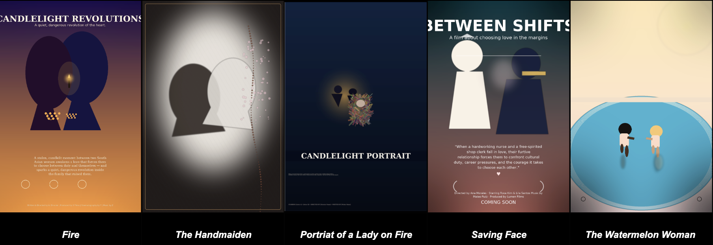
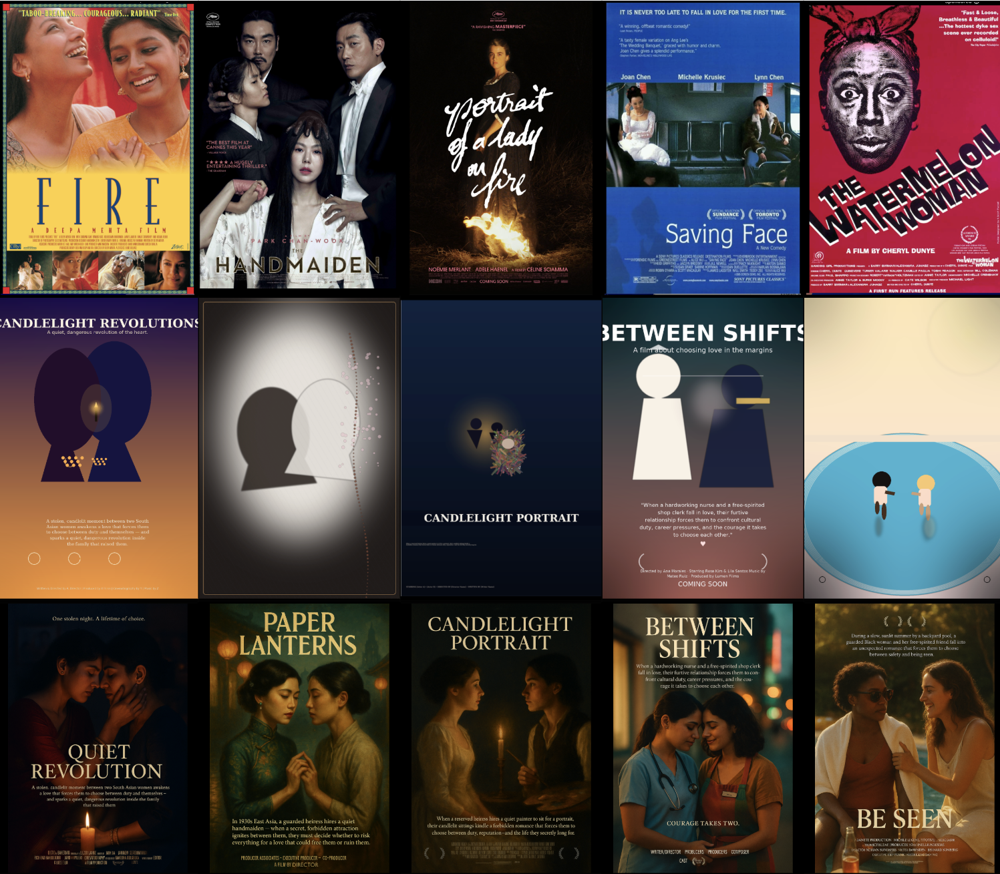

Glitch Gallery: The Value of Errors

A series of glitches and the original titles they are related to.
A few times, the model (GPT-5) glitched when I asked for a new poster. Whenever that happened, I simply asked again, and in the follow-up, I usually received the rendering that's included in the broader data collection. I did not collect these glitches as part of the official data, and yet, looking more closely at these cruder outputs reveals additional peculiarities. The glitches are a bit like DrunkGPT: everything expresses more essentialized, unvarnished, and rough, but the seeds of what will dominate the non-glitchy poster are already present in these renderings.
The light source that will be responsible for the overall mood of the image, the amber or white blurred glow which dominates the un-glitchy poster, is easily visible in four of the five images. GPT-5's penchant for rendering shadowy conditions (which caters to its strengths and frees the model from the obligation to generate an expressive human face) often results in twilight or nighttime scenes.
The pared-down presence of two figures, like modernist chess pawns, defines the center of each version. The figures are aligned or nearly aligned, making visible the telltale composition of Lesbians as exclusive twosomes. In algorithmic outputs, these figures don't exist among others, but as a lone couple in relation to either a pool of light or (what will become) a swimming pool as visible in The Watermelon Woman's glitch rendering. Each poster, in a way, represents its own new closet. The two shapes are arranged in mirror, or even doppelganger, positions, either presented as precise duplicates or as color-contrasting shapes (The Handmaiden, Saving Face, The Watermelon Woman).
The color-contrasted figures originate from outputs inspired by films in which differences distinguish the protagonists. In The Handmaiden, the difference is one of class; in The Watermelon Woman, the Black protagonist has a relationship with a white woman. In Saving Face, the original poster is more subtle (and filmmaker Alice Wu has shown that her investigation of queerness and relationships is informed by and seen through the lens of other relationships). In Saving Face, a mother-daughter relationship is central, and its complexity is the focus of the original poster, which shows the mother in a white wedding dress and the daughter in dark clothing, with a curious, telling distance between them. The subtlety and the possibility of such a subtlety are lost, and the "inspired" version apparently must feature romantic protagonists at the center of a Lesbian film.
The glitches also reveal something about the way the models deconstruct and reconstruct images. A broad image concept that leans on default compositions (which may have been excerpted from existing stills and posters) is proposed first, then filled in with remixed parts and pixels from training images. The gravitational pull of the stereotypical initial composition shapes subsequent iterations, even if they differ in the details of their final pixelage.
Through looking at these glitches, I think it becomes possible to ponder what we lose when we lose different processes of making. What can happen in a human creative processes, where we might find composition and a path to final execution of an image in a myriad of ways — by chance, by radical revision, by starting at the fringe and not the center, by producing an unintended collage in a fit of discontent, or by reconsidering a draft in an unlikely context, etc. — does not happen here. The algorithmic process is bereft of a multitude of sensory chance encounters that have the power to dislodge the stereotyped/formulaic.
Even so, it is precisely this articulated oversimplification (the characteristic of the glitch) that holds the most promise as its own material. As I watched the growing collection of bland posters, I began to hope for glitches.
"Whatever you now find weird, ugly, uncomfortable, and nasty about a new medium will surely become its signature. CD distortion, the jitteriness of digital video, the crap sound of 8-bit - all of these will be cherished and emulated as soon as they can be avoided. It's the sound of failure: so much modern art is the sound of things going out of control, of a medium pushing to its limits and breaking apart. The distorted guitar sound is the sound of something too loud for the medium supposed to carry it. The blues singer with the cracked voice is the sound of an emotional cry too powerful for the throat that releases it. The excitement of grainy film, of bleached-out black and white, is the excitement of witnessing events too momentous for the medium assigned to record them."
― Brian Eno, A Year With Swollen Appendices
And with the rudimentary building blocks visible in the composition of these glitchy images, I thought I understood what Eno means: When the model gives me lemons, I can read lemonade. When it gives me fully processed and vacuum-packed content, I primarily consume or refuse what I am offered. My effort as a collaborator is no longer generative, complex, or instinctive, but more directorial. I am now repeatedly in the position of making a binary choice. Thumbs up or thumbs down. Even if the interaction with the model allows for iterations, I am reacting to its propositions, and everything has to move through the intellectual effort that prompting language demands. The instincts and accidents of multisensory processes have been reined in or disabled.
To me, ideally, the human experience of making art (or making anything for the pleasure of making it) offers both. Effort and consideration in choosing my materials, an ongoing negotiation with realities that infringe on best laid plans of making, collaborators' unbearable lapses, and glorious expansions. When GPT-5 wasn't glib and competent but vague and unpredictable, i.e., glitchy, it had the accidental capacity to challenge my expectations and demand my creative interpretation. Although now, keeping Eno in mind, I think that precisely the blandness of its non-glitchy outputs is the "weird, ugly, uncomfortable and nasty" of this medium, and if so, the bland, non-glitchy posters cannot be an end result but a new raw material.

Each column of this image shows the relationship of inspiration between the original poster, the glitch, and the GPT-5 non-glitch poster.